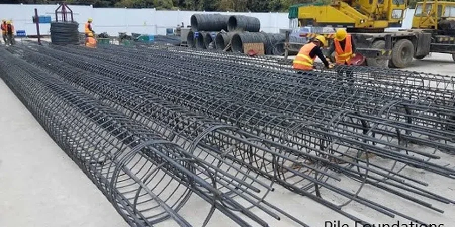

El subsuelo de Alto Hospicio, asentado sobre la terraza costera del Pacífico, está compuesto por arenas limosas de origen eólico con estratos de grava cementada. La napa freática aparece a más de 40 metros de profundidad, lo que permite diseñar pilotes de punta apoyados en el sustrato rocoso. Para caracterizar estos suelos conviene realizar un ensayo de penetración estándar (SPT) que entregue el número de golpes por capa, junto con una clasificación granulométrica que defina la gradación real del material. En esta ciudad cada pilote debe verificarse con carga axial y lateral según la norma NCh3171.

Los pilotes en Alto Hospicio deben apoyarse en el estrato rocoso a 20 m de profundidad para resistir aceleraciones sísmicas de hasta 0,40 g.
Metodología y alcance
Quien ha trabajado en Alto Hospicio sabe que el talud del borde costero impone restricciones de acceso y que las arenas superficiales colapsan fácilmente si se saturan. Por eso el diseño de fundaciones en pilotes exige conocer la resistencia por fuste y por punta en cada metro perforado. Los pilotes de hormigón colado in situ, de 0,60 a 1,20 m de diámetro, se profundizan entre 15 y 25 m hasta alcanzar el estrato competente. Durante la perforación se registra la velocidad de avance y se extraen muestras para ensayos de compresión simple. La capacidad última se calcula con métodos semiempíricos calibrados con pruebas de carga estática.
Imagen técnica de referencia — Alto Hospicio
Consideraciones locales
La norma NCh433 exige que las fundaciones en Alto Hospicio soporten aceleraciones de 0,40 g sin perder capacidad portante ni generar asentamientos diferenciales. El principal riesgo es la presencia de lentes de arena suelta no detectados que, al vibrar, provocan licuefacción localizada en niveles saturados. Un diseño de fundaciones en pilotes que ignore estos lentes puede inducir pandeo en pilotes esbeltos o pérdida de contacto lateral. Por eso la campaña geotécnica incluye sondajes cada 25 m de separación con extracción continua de testigos y ensayos SPT cada 1,5 m de profundidad.
Sondajes mecánicos con recuperación de testigos, ensayos SPT cada 1,5 m, clasificación unificada SUCS y perfiles de resistencia al corte.
02
Cálculo de capacidad portante
Determinación de carga axial última por punta y fuste mediante métodos de Meyerhof, Vesic y API, con verificación por carga de prueba.
03
Diseño estructural de pilotes
Armadura longitudinal y transversal según solicitaciones sísmicas, revisión de pandeo y esfuerzos de flexión en pilotes esbeltos.
04
Supervisión de instalación
Control de verticalidad, profundidad, integridad mediante ensayos de cross-hole y registro continuo de parámetros de hinca o perforación.
Normativa aplicable
NCh433.Of2012 - Diseño sísmico de edificios, NCh3171.Of2012 - Fundaciones profundas - Pilotes, ACI 543R-12 - Guide to Design, Manufacture, and Installation of Concrete Piles
Preguntas frecuentes
¿Cuánto cuesta un diseño de fundaciones en pilotes en Alto Hospicio?
El costo varía entre $734.000 y $3.106.000, dependiendo del número de pilotes, la profundidad de perforación y la complejidad del terreno. Incluye campaña geotécnica, cálculo estructural e informe final.
¿Qué tipo de pilote es mejor para Alto Hospicio?
Los pilotes de hormigón colado in situ de 0,60 a 1,20 m de diámetro son los más usados. La arena eólica permite perforación con lodos bentoníticos y el apoyo en roca se logra entre 15 y 25 m de profundidad.
¿Se necesita estudio de licuefacción para pilotes?
Sí. Aunque la napa freática es profunda, pueden existir lentes de arena suelta saturada. El estudio evalúa el potencial de licuefacción con el método de Seed-Idriss y define si se requiere tratamiento del suelo.
¿Cuánto tiempo toma el diseño completo?
Entre 4 y 6 semanas, incluyendo la campaña de sondajes (2 semanas), ensayos de laboratorio (1 semana) y el cálculo estructural con informe (1-2 semanas).
¿Qué normativa rige el diseño de pilotes en Chile?
La NCh3171 establece los requisitos para fundaciones profundas, complementada por la NCh433 para solicitaciones sísmicas y el ACI 543R como guía de diseño internacional.